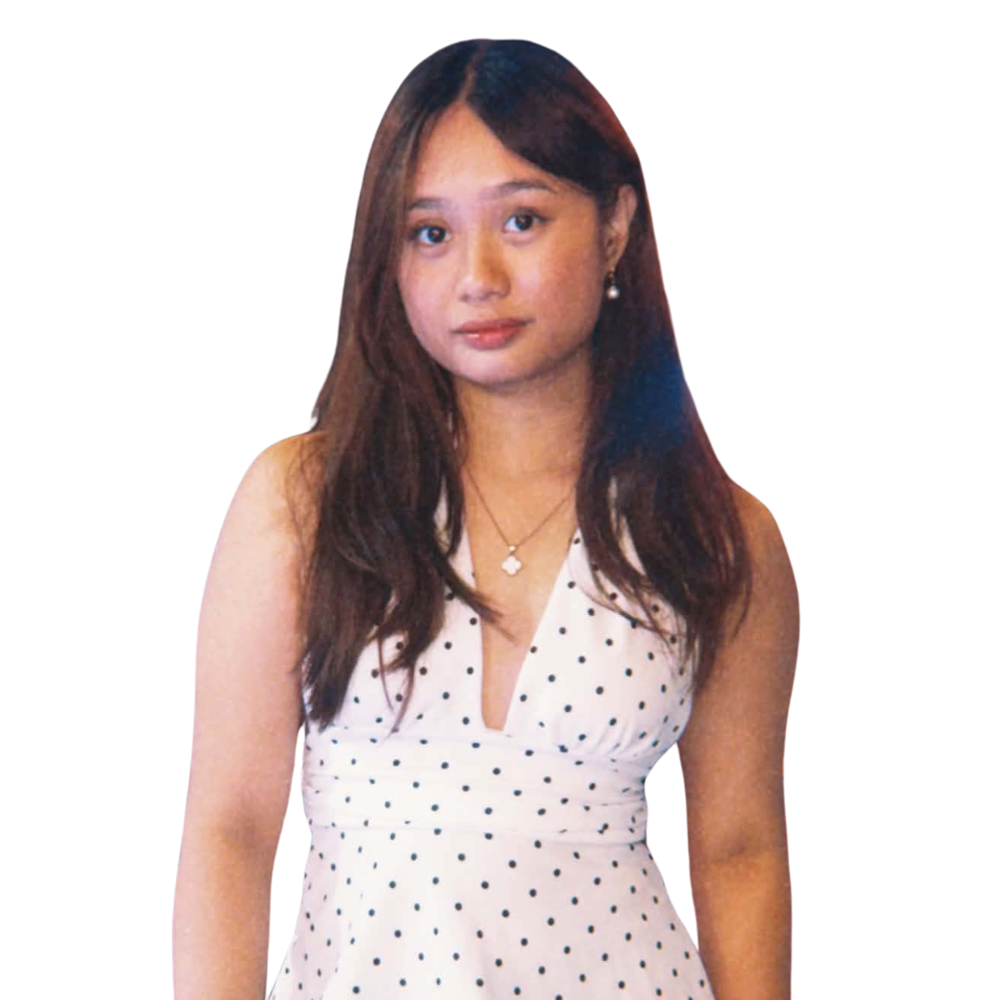

CTF Champion 2026
Won DLSU's Capture The Flag with Team Prompt Patrol — Department of Computer Technology.
champion2026
initializing…
click anywhere or press ESC to skip
Computer Science undergraduate majoring in Network & Information Security. CTF champion working both sides of application security — vulnerability assessment, web-app testing, and secure full-stack development.

SP LVL 3 · CSWon DLSU's Capture The Flag with Team Prompt Patrol — Department of Computer Technology.
NSSECU2 Advanced & Offensive Security — recon, exploitation, CVSS scoring & technical reporting.
Passed the ISC2 CC exam — security principles, access control, network & operations security.
Top academic standing at De La Salle University — AY 2025–2026, Terms 1 & 2.
My AI web-app fuzzer surfaced 7 vulnerability classes with a clean run on a hardened control.
Directed national & international debate tournaments as CIDA Vice President — logistics to finance.